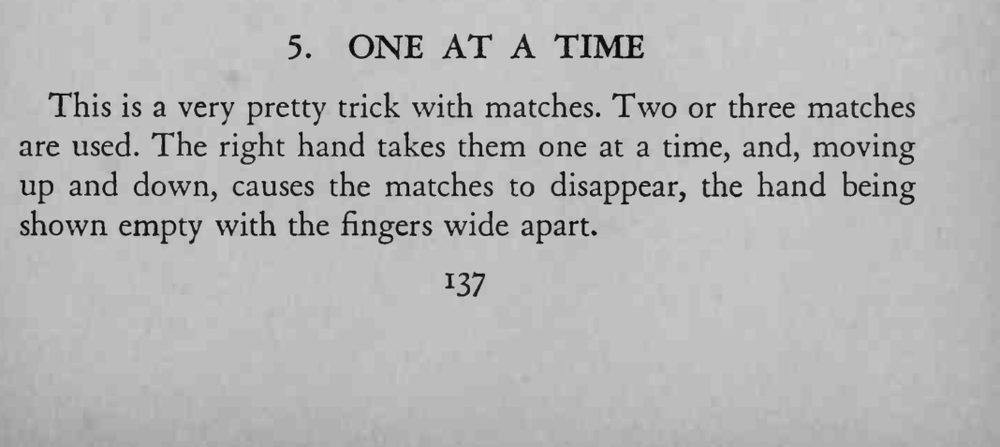
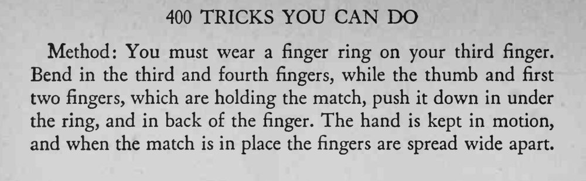

魔术师把两三根火柴一根根拿在手里，上下移动之间火柴接连消失，最后摊开手指，手里空空如也。
手不能停，藏火柴要在上下移动的节奏里完成。


This is a very pretty trick with matches. Two or three matches are used. The right hand takes them one at a time, and, moving up and down, causes the matches to disappear, the hand being shown empty with the fingers wide apart. Method: You must wear a finger ring on your third finger. Bend in the third and fourth fingers, while the thumb and first two fingers, which are holding the match, push it down in under the ring, and in back of the finger. The hand is kept in motion, and when the match is in place the fingers are spread wide apart.